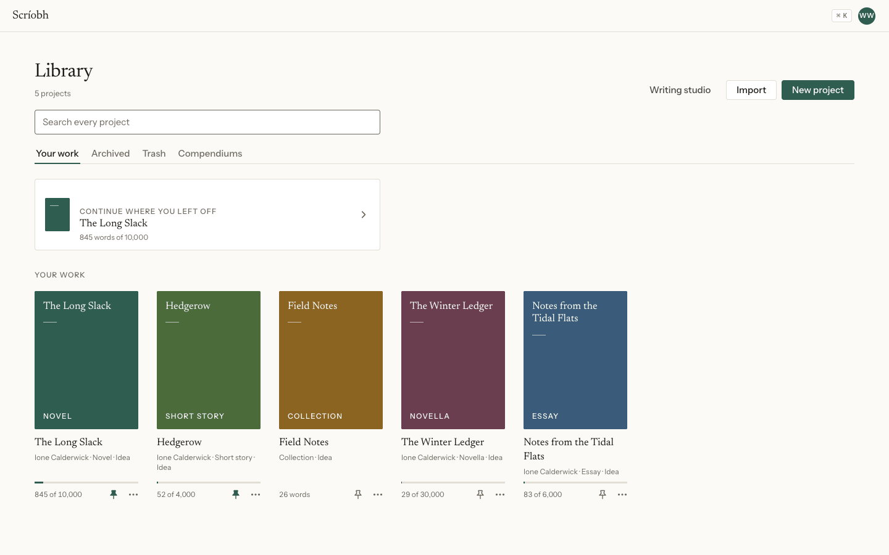
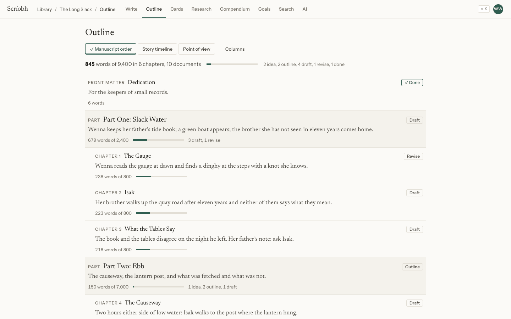
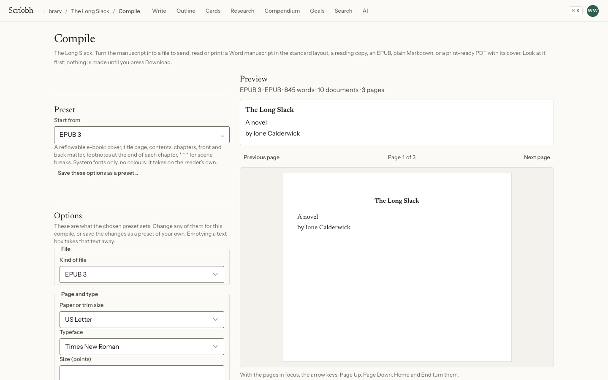

Self-hosted writing app
A writing app for long projects.
Scríobh is for the things that outgrow one file: a novel, a report, a run of essays. Your words are kept as plain text files you can open anywhere, and nothing leaves your computer unless you send it.
AI is off. It stays off unless you add your own key and switch it on, project by project, feature by feature.
There’s no analytics and no telemetry, and no account on anyone else’s server.

- Where it lives
- On your computer, or a server you run
- How it’s kept
- As plain text files you can open anywhere
- What leaves
- Nothing, unless you send it
- AI
- Off until you turn it on
AI is off until you turn it on.
A fresh install sends nothing anywhere. There’s no built-in AI service. To use any, you add your own key or point Scríobh at a model running on your own computer. Even then it stays off for every project until you turn it on for that one.
Each feature is its own switch, per project: suggestions on a selection, alternative wordings, chat, critique, summaries, continuity checks, pulling characters and places out of a chapter, and the Lab. None of them starts on.
When it’s on, you see exactly what will be sent before it goes. You can keep it to a model on your own computer. Nothing it writes goes into your text unless you accept it.
The book works without it. Outline, characters, timeline, research, revisions and compile never need AI.
Demo
What it is
Most writing tools are note apps with a publish button, or word processors with a sync problem. Neither holds a manuscript well.
Scríobh is built around the project: a manuscript tree, a plan next to it, a cast of characters under it, and a history of every word you change. The name is Irish for “write”.
It isn’t a notes app, a live collaborative editor, a publishing platform or an AI book generator. Your work isn’t encrypted on disk either, so protect the disk it’s on.

What you can count on
-
Your words stay yours
There’s no analytics, no telemetry and no outside fonts, and the app doesn’t make requests you didn’t ask for. This page loads nothing from other sites either.
-
Nothing gets in your way
While you type, nothing animates, shifts around or interrupts you. Text you didn’t write never goes into your chapter unless you accept it, and live updates never overwrite something you haven’t saved.
-
You can leave any time
Export to Word, EPUB, print-ready PDF or Markdown, and import from Word, Scrivener, Obsidian and more. Every version of your text is kept, and you can compare any two and restore one.
Features
Alternative wordings
Keep other phrasings next to the one in the text. The page always holds the wording you picked, so an export reads as plain text. Ghosting a wording hides it. It never deletes it.

Outline
Synopses, targets and statuses, with progress for every part and chapter. Look at it in manuscript order, story-timeline order or by point of view.

Compendium
Characters, places, items, organisations and concepts, with aliases and relations. It also has a timeline with continuity checks, research notes and attachments, and one Compendium can be shared across projects.

Writing Studio
Words by day, week and year, a streak, sprints and goals. It counts words added, and cutting text never counts against you. Everything is worked out where your writing lives, and only you see it.

Compile
Make a US or UK manuscript DOCX, a styled DOCX, an EPUB, Markdown or a print-ready PDF with covers. You preview the pages first, and nothing is made until you press Download. Each export records a list of what it included.

On a phone
The same pages work at phone width. It can be installed as an app, it has an offline page, and the formatting bar sits above the keyboard.

And
Writing and structure
Links between pages and backlinks, a Source view that shows the plain text, search, light and dark themes, and versions you can compare and restore.
Review and sharing
Comments tied to the text, suggestions an editor accepts or rejects, and read-only or comment-only links for guests.
Import, export and publishing
Import from Word (tracked changes become suggestions), Scrivener, Obsidian, WordPress, Ghost, an EPUB, a PDF with a text layer or a folder of files. Export a submission bundle or HTML, or publish a static site.
Get the app
The desktop app runs on your computer and needs nothing set up. Open it, make a local profile (a name, no password) and start writing. Your writing lives in your system’s app data folder, and Help, Show the Data Folder opens it. It never checks for updates, so come back here for new versions.
It isn’t signed yet. macOS will make you allow it the first time (System Settings, Privacy & Security, Open Anyway), and Windows SmartScreen will warn you (More info, Run anyway). The Status section below says how little it has been tested.
The desktop app is for macOS, Windows and Linux. Pick one below from a computer.
Version latest.
All downloads
-
macOS
- Universal .dmg (about 40 MB)Apple silicon and Intel. The one to pick.
- Apple silicon .dmg (about 19 MB)
- Intel .dmg (about 20 MB)
-
Windows
- Setup .exe (about 15 MB)64-bit Windows 10 and 11. It needs the WebView2 runtime. Windows 11 and up-to-date Windows 10 usually have it.
-
Linux
- AppImage (about 98 MB)64-bit. It needs fuse2.
- .deb package (about 21 MB)
Check what you downloaded
The checksums are in SHA256SUMS-desktop.txt. On Linux, run sha256sum -c --ignore-missing SHA256SUMS-desktop.txt in the folder with your download. On a Mac, run shasum -a 256 <file> and compare it by eye. The list comes from the same place as the files, so it catches a bad download, not a hostile release.
Running it on a server for yourself or other people? That’s at the bottom of this page.
Status
Releases are tagged as the work lands. A tag says what was built. It doesn’t say the roadmap’s exit criteria are met. This is what hasn’t been checked.
- The desktop app has been run, unsigned, on one Mac and nowhere else by a person. Nobody has installed it on a clean machine, fetched an update or seen it on Windows. An automated test installs the Linux build and checks that its server answers, but nobody has looked at the window.
- No screen reader, real phone or browser other than Chromium has been used on the newer screens.
- No real printer, copy of Word or AI service has been used. Stand-ins on a local machine were.
- The checks that need other people haven’t happened: two people installing from the guide on their own, a printed proof, and a restore on a clean machine by someone other than the author.
For the people running it
Everything above is for writers. This part is for you if you’re putting Scríobh on a server, running the container or building it yourself.
How it’s built
It’s one Go binary and one SQLite file. Pages are rendered on the server with HTMX, the editor is one pinned ProseMirror bundle, and nothing needs npm at runtime. Every write is a registered operation, and each operation is served as a page, a REST route, a CLI command and an MCP tool, so an agent holding a scoped key can do what a person does and nothing more.
The database is the source of truth. A read-only Markdown copy of every project is written continuously, so grep, git and a text editor always see the work. Git sync is push-only. Scríobh never pulls, and import is the only way text comes in from a remote.
The desktop app is a Tauri window around the same server binary, on a loopback port. It runs its own embedded OpenID Connect issuer and signs in through it, the same way the server does.
Sign-in
Sign-in is OpenID Connect only. There are no local passwords. Register Scríobh with your identity provider as a confidential client, authorization code with PKCE. The redirect URI is $SCRIOBH_BASE_URL/auth/oidc/callback. The ID token itself needs sub, email, a true email_verified and a groups list. Roles come from three groups, scriobh-admins, scriobh-writers and scriobh-readers, and you can rename them.
The container image
- Register the client with your identity provider and note the issuer, client id and secret.
- Write an
.envwithSCRIOBH_BASE_URL,SCRIOBH_OIDC_ISSUER,SCRIOBH_OIDC_CLIENT_ID,SCRIOBH_OIDC_CLIENT_SECRETandSCRIOBH_SECRET_KEY. Make the key withopenssl rand -hex 32and keep a copy off the machine. It isn’t in backups. - Run it, then put TLS in front. Run one container per data volume.
docker run -d --name scriobh --restart unless-stopped \
--read-only --tmpfs /tmp --cap-drop ALL --security-opt no-new-privileges:true \
-p 127.0.0.1:8080:8080 -v scriobh-data:/data --env-file .env \
ghcr.io/crueber/scriobh:latestlatest moves, so pin a release tag if you need it to stay put. The full guide, with reverse-proxy examples and backups, is docs/OPERATIONS.md. To look at it without an identity provider, make run or docker compose up --build gives a development build with three fixed test users. Never expose that to a network.
AI providers
There’s no built-in AI service. An administrator adds a provider in the app: a local Ollama, any OpenAI-compatible server, OpenRouter or OpenCode. A project’s owner then picks, per project, a mode, which features are allowed, which providers and models, a budget and whether names are redacted. A project with no policy has mode off, and nothing is sent.
Server binaries
Server and CLI archives for the latest release, with SHA256SUMS.txt. They’re static, the server is the production build with no development sign-in, and only the macOS Apple silicon one has been run. The rest are cross-compiled.
What hasn’t been verified here
- The container image has never been run to serve, and the compose files only parse.
- No real identity provider has been registered against this build. Only the built-in development issuer has been used.
- No real MCP client, mail relay, Pandoc, embedding model or Git host has been used. Stand-ins on loopback were.
Documentation
- OperationsInstall, sign-in, proxy, backup and restore, AI providers, Git sync, webhooks.
- ArchitectureGo, HTMX, SQLite, the operation registry, security and performance budgets.
- Working with an agentA scoped key, the command-line tool and the generated skill.
- DesktopWhat the app is made of, where it keeps things, and what is verified.
- OverviewWhat exists, what isn’t built and what isn’t verified.
- FeaturesEvery feature, and the things deliberately left out.
- VisionWho it’s for and the rules that decide arguments.
- DesignType, colour and motion. This page borrows from it.